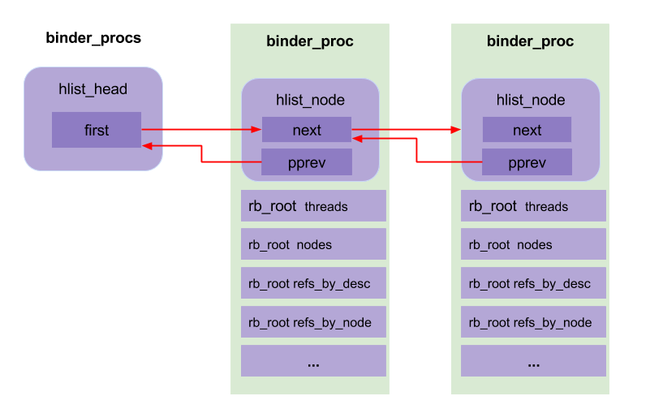

Binder机制01-驱动
核心¶
Binder机制的实现中，最核心的就是Binder驱动。 Binder是一个miscellaneous类型的驱动，本身不对应任何硬件，所有的操作都在软件层。 Binder驱动的核心是维护一个binder_proc类型的链表。里面记录了包括Service Manager在内的所有Client信息，当Client去请求得到某个Service时，Binder驱动就去binder_proc中查找相应的Service返回给Client，同时增加当前Service的引用个数。
结构体¶
Binder驱动中包含了很多的结构体。为了便于下文讲解，这里我们先对这些结构体做一些介绍。
驱动中的结构体可以分为两类：
一类是与用户空间共用的，这些结构体在Binder通信协议过程中会用到。因此，这些结构体定义在binder.h中，包括：
| 结构体名称 | 说明 |
| flat_binder_object | 描述在Binder IPC中传递的对象，见下文 |
| binder_write_read | 存储一次读写操作的数据 |
| binder_version | 存储Binder的版本号 |
| transaction_flags | 描述事务的flag，例如是否是异步请求，是否支持fd |
| binder_transaction_data | 存储一次事务的数据 |
| binder_ptr_cookie | 包含了一个指针和一个cookie |
Binder驱动中，还有一类结构体是仅仅Binder驱动内部实现过程中需要的，它们定义在binder.c中，包括：
| 结构体名称 | 说明 |
| binder_node | 描述Binder实体节点，即：对应了一个Server |
| binder_ref | 描述对于Binder实体的引用 |
| binder_buffer | 描述Binder通信过程中存储数据的Buffer |
| binder_proc | 描述使用Binder的进程 |
| binder_thread | 描述使用Binder的线程 |
| binder_work | 描述通信过程中的一项任务 |
| binder_transaction | 描述一次事务的相关信息 |
| binder_deferred_state | 描述延迟任务 |
| binder_stats | Binder线程相关统计数据 |
| binder_ref_death | 死亡通知的结构体 |
binder_write_read¶
binder的读写结构， 记录了binder中读和写的数据信息：
struct binder_write_read {
binder_size_t write_size; //要写入的字节数,write_buffer的总字节数
binder_size_t write_consumed; //驱动程序占用的字节数,write_buffer已消费的字节数
binder_uintptr_t write_buffer; //写缓冲数据的指针
binder_size_t read_size; //要读的字节数,read_buffer的总字节数
binder_size_t read_consumed; //驱动程序占用的字节数,read_buffer已消费的字节数
binder_uintptr_t read_buffer; //读缓存数据的指针
};
用户空间程序和Binder驱动程序交互基本都是通过BINDER_WRITE_READ命令，来进行数据的读写操作。
- write_buffer：用于发送IPC(或IPC reply)数据，即传递经由Binder Driver的数据时使用。
- read_buffer：用于接收来自Binder Driver的数据，即Binder Driver在接收IPC(或IPC reply)数据后，保存到read_buffer，再传递到用户空间。
write_buffer和read_buffer都是包含Binder协议命令和binder_transaction_data结构体。
- copy_from_user()：将用户空间IPC数据拷贝到内核态binder_write_read结构体。
- copy_to_user()：将用内核态binder_write_read结构体数据拷贝到用户空间。
binder_transaction_data¶
struct binder_transaction_data {
union {
__u32 handle; //binder_ref（即handle）
binder_uintptr_t ptr; //Binder_node的内存地址
} target; //RPC目标
binder_uintptr_t cookie; //BBinder指针
__u32 code; //RPC代码，代表Client与Server双方约定的命令码
__u32 flags; //标志位，比如TF_ONE_WAY代表异步，即不等待Server端回复
pid_t sender_pid; //发送端进程的pid
uid_t sender_euid; //发送端进程的uid
binder_size_t data_size; //data数据的总大小
binder_size_t offsets_size; //IPC对象的大小
union {
struct {
binder_uintptr_t buffer; //数据区起始地址
binder_uintptr_t offsets; //数据区IPC对象偏移量
} ptr;
__u8 buf[8];
} data; //RPC数据
};
当BINDER_WRITE_READ命令的目标是本地Binder node时，target使用ptr，否则使用handle。只有当这是Binder node时，cookie才有意义，表示附加数据，由进程自己解释。
- target：对于BpBinder则使用handle，对于BBinder则使用ptr，故使用union数据类型来表示。
- code：比如注册服务过程code为ADD_SERVICE_TRANSACTION，又比如获取服务code为CHECK_SERVICE_TRANSACTION。
- data：代表整个数据区，其中data.ptr指向的是传递给Binder驱动的数据区的起始地址，data.offsets指的是数据区中IPC数据地址的偏移量。
- cookie: 记录着BBinder指针。
- data_size：代表本次传输的parcel数据的大小。
-
offsets_size： 代表传递的IPC对象的大小；根据这个可以推测出传递了多少个binder对象。
-
对于64位IPC，一个IPC对象大小等于8。
- 对于32位IPC，一个IPC对象大小等于4。
binder_node¶
/**
* struct binder_node - binder node bookkeeping
* @debug_id: unique ID for debugging
* (invariant after initialized)
* @lock: lock for node fields
* @work: worklist element for node work
* (protected by @proc->inner_lock)
* @rb_node: element for proc->nodes tree
* (protected by @proc->inner_lock)
* @dead_node: element for binder_dead_nodes list
* (protected by binder_dead_nodes_lock)
* @proc: binder_proc that owns this node
* (invariant after initialized)
* @refs: list of references on this node
* (protected by @lock)
* @internal_strong_refs: used to take strong references when
* initiating a transaction
* (protected by @proc->inner_lock if @proc
* and by @lock)
* @local_weak_refs: weak user refs from local process
* (protected by @proc->inner_lock if @proc
* and by @lock)
* @local_strong_refs: strong user refs from local process
* (protected by @proc->inner_lock if @proc
* and by @lock)
* @tmp_refs: temporary kernel refs
* (protected by @proc->inner_lock while @proc
* is valid, and by binder_dead_nodes_lock
* if @proc is NULL. During inc/dec and node release
* it is also protected by @lock to provide safety
* as the node dies and @proc becomes NULL)
* @ptr: userspace pointer for node
* (invariant, no lock needed)
* @cookie: userspace cookie for node
* (invariant, no lock needed)
* @has_strong_ref: userspace notified of strong ref
* (protected by @proc->inner_lock if @proc
* and by @lock)
* @pending_strong_ref: userspace has acked notification of strong ref
* (protected by @proc->inner_lock if @proc
* and by @lock)
* @has_weak_ref: userspace notified of weak ref
* (protected by @proc->inner_lock if @proc
* and by @lock)
* @pending_weak_ref: userspace has acked notification of weak ref
* (protected by @proc->inner_lock if @proc
* and by @lock)
* @has_async_transaction: async transaction to node in progress
* (protected by @lock)
* @sched_policy: minimum scheduling policy for node
* (invariant after initialized)
* @accept_fds: file descriptor operations supported for node
* (invariant after initialized)
* @min_priority: minimum scheduling priority
* (invariant after initialized)
* @inherit_rt: inherit RT scheduling policy from caller
* @txn_security_ctx: require sender's security context
* (invariant after initialized)
* @async_todo: list of async work items
* (protected by @proc->inner_lock)
*
* Bookkeeping structure for binder nodes.
*/
struct binder_node {
int debug_id; //节点创建时分配，具有全局唯一性，用于调试使用
spinlock_t lock;
struct binder_work work;
union {
struct rb_node rb_node; //binder节点正常使用，union
struct hlist_node dead_node; //binder节点已销毁，union
};
struct binder_proc *proc; //binder所在的进程
struct hlist_head refs; //所有指向该节点的binder引用队列
int internal_strong_refs;
int local_weak_refs;
int local_strong_refs;
int tmp_refs
binder_uintptr_t ptr; //指向用户空间binder_node的指针，对应flat_binder_object.binder
binder_uintptr_t cookie; //数据，对应flat_binder_object.cookie
struct {
/*
* bitfield elements protected by
* proc inner_lock
*/
u8 has_strong_ref:1;
u8 pending_strong_ref:1;
u8 has_weak_ref:1;
u8 pending_weak_ref:1;
};
struct {
/*
* invariant after initialization
*/
u8 sched_policy:2;
u8 inherit_rt:1;
u8 accept_fds:1;
u8 txn_security_ctx:1;
u8 min_priority;
};
bool has_async_transaction;
struct list_head async_todo; //异步todo队列
};
结构struct binder_node表示一个binder实体。rb_node和dead_node组成一个联合体。如果这个Binder实体还在正常使用，则使用rb_node来连入proc->nodes所表示的红黑树的节点，这棵红黑树用来组织属于这个进程的所有Binder实体。如果这个Binder实体所属的进程已经销毁，而这个Binder实体又被其它进程所引用，则这个Binder实体通过dead_node进入到一个哈希表中去存放。proc成员变量就是表示这个Binder实例所属于进程了。refs成员变量把所有引用了该Binder实体的Binder引用连接起来构成一个链表。internal_strong_refs、local_weak_refs和local_strong_refs表示这个Binder实体的引用计数。ptr和cookie成员变量分别表示这个Binder实体在用户空间的地址以及附加数据。
- debug_id：用于调试目的，和ref的debug_id共用一个整数空间。
- work：当本节点引用计数发生改变，需要通知所属进程时，通过该成员挂入所属进程的to-do队列，唤醒所属进程执行Binder实体引用计数的修改。
- rb_node：每个进程都维护一棵红黑树，以Binder实体在用户空间的指针，即本结构的ptr成员为索引存放该进程所有的Binder实体。这样驱动可以根据Binder实体在用户空间的指针很快找到其位于内核的节点。rb_node用于将本节点链入该红黑树中。
- dead_node：销毁时必须将rb_node从红黑树中摘除，如果本节点还有引用切断，就用dead_node将节点隔离到另外一个链表中，直到通知所有进程切断该节点的引用后，该节点才可能被销毁。
- proc：本成员指向节点所属的进程，即提供该节点的进程。
- refs：本成员是队列头，所有指向本节点的引用都连接到该队列里，这些引用可能属于不同的进程。通过该对列可以遍历指向该节点的所有引用。
- internal_strong_refs：用来实现强指针的计数器：产生一个指向本节点的强引用，该计数器则加1
- local_weak_refs：驱动为传输中的Binder设置的弱引用计数器。如果一个Binder打包在数据包中从一个进程发送到另外一个进程，驱动会为该Binder增加引用计数，知道接收进程通过BC_FREE_BUFFER通知驱动释放该数据包的数据区为止。
- local_strong_refs：驱动为传输中的Binder设置的强引用计数，同上
- ptr：指向用户空间Binder实体的指针，来自于flat_binder_object的binder成员。
- cookie：指向用户空间的附加指针，来自于flat_binder_object的cookie成员
- has_strong_ref, pending_strong_ref, has_weak_ref, pending_weak_ref：这一组标志用于控制驱动与Binder实体所在进程交互式修改引用计数。
binder_ref¶
/**
* struct binder_ref - struct to track references on nodes
* @data: binder_ref_data containing id, handle, and current refcounts
* @rb_node_desc: node for lookup by @data.desc in proc's rb_tree
* @rb_node_node: node for lookup by @node in proc's rb_tree
* @node_entry: list entry for node->refs list in target node
* (protected by @node->lock)
* @proc: binder_proc containing ref
* @node: binder_node of target node. When cleaning up a
* ref for deletion in binder_cleanup_ref, a non-NULL
* @node indicates the node must be freed
* @death: pointer to death notification (ref_death) if requested
* (protected by @node->lock)
*
* Structure to track references from procA to target node (on procB). This
* structure is unsafe to access without holding @proc->outer_lock.
*/
struct binder_ref {
/* Lookups needed: */
/* node + proc => ref (transaction) */
/* desc + proc => ref (transaction, inc/dec ref) */
/* node => refs + procs (proc exit) */
struct binder_ref_data data;
struct rb_node rb_node_desc; //以desc为索引的红黑树
struct rb_node rb_node_node; //以node为索引的红黑树
struct hlist_node node_entry;
struct binder_proc *proc; //binder进程
struct binder_node *node; //binder节点
struct binder_ref_death *death; //如果不为空，则client想获知binder的死亡
};
binder_ref 描述了每个对服务对象的引用，对应与Client端。如上图所示，每个Ref通过node指向binder_node. 一个进程所有的binder_ref通过两个红黑树（RbTree)进行管理，通过binder_get_ref() 和 binder_get_ref_for_node快速查找。
binder_proc¶
/**
* struct binder_proc - binder process bookkeeping
* @proc_node: element for binder_procs list
* @threads: rbtree of binder_threads in this proc
* (protected by @inner_lock)
* @nodes: rbtree of binder nodes associated with
* this proc ordered by node->ptr
* (protected by @inner_lock)
* @refs_by_desc: rbtree of refs ordered by ref->desc
* (protected by @outer_lock)
* @refs_by_node: rbtree of refs ordered by ref->node
* (protected by @outer_lock)
* @waiting_threads: threads currently waiting for proc work
* (protected by @inner_lock)
* @pid PID of group_leader of process
* (invariant after initialized)
* @tsk task_struct for group_leader of process
* (invariant after initialized)
* @deferred_work_node: element for binder_deferred_list
* (protected by binder_deferred_lock)
* @deferred_work: bitmap of deferred work to perform
* (protected by binder_deferred_lock)
* @is_dead: process is dead and awaiting free
* when outstanding transactions are cleaned up
* (protected by @inner_lock)
* @todo: list of work for this process
* (protected by @inner_lock)
* @stats: per-process binder statistics
* (atomics, no lock needed)
* @delivered_death: list of delivered death notification
* (protected by @inner_lock)
* @max_threads: cap on number of binder threads
* (protected by @inner_lock)
* @requested_threads: number of binder threads requested but not
* yet started. In current implementation, can
* only be 0 or 1.
* (protected by @inner_lock)
* @requested_threads_started: number binder threads started
* (protected by @inner_lock)
* @tmp_ref: temporary reference to indicate proc is in use
* (protected by @inner_lock)
* @default_priority: default scheduler priority
* (invariant after initialized)
* @debugfs_entry: debugfs node
* @alloc: binder allocator bookkeeping
* @context: binder_context for this proc
* (invariant after initialized)
* @inner_lock: can nest under outer_lock and/or node lock
* @outer_lock: no nesting under innor or node lock
* Lock order: 1) outer, 2) node, 3) inner
* @binderfs_entry: process-specific binderfs log file
*
* Bookkeeping structure for binder processes
*/
struct binder_proc {
struct hlist_node proc_node; //进程节点
struct rb_root threads; //binder_thread红黑树的根节点，存放指针，指向进程所有的binder_thread, 用于Server端
struct rb_root nodes; //binder_node红黑树的根节点，存放指针，指向进程所有的binder 对象
struct rb_root refs_by_desc; //记录binder引用, 便于快速查找,binder_ref红黑树的根节点(以handle为key)，它是Client在Binder驱动中的体现
struct rb_root refs_by_node; //记录binder引用, 便于快速查找,binder_ref红黑树的根节点（以ptr为key），它是Client在Binder驱动中的体现
struct list_head waiting_threads;
int pid; //相应进程id
struct task_struct *tsk; //相应进程的task结构体
struct hlist_node deferred_work_node;
int deferred_work;
bool is_dead;
struct list_head todo; //进程将要做的事
struct binder_stats stats; //binder统计信息
struct list_head delivered_death;
int max_threads;
int requested_threads; //请求的线程数
int requested_threads_started; //已启动的请求线程数
int tmp_ref;
struct binder_priority default_priority; //默认优先级
struct dentry *debugfs_entry;
struct binder_alloc alloc;
struct binder_context *context;
spinlock_t inner_lock;
spinlock_t outer_lock;
struct dentry *binderfs_entry;
};
一个进程既包含的Service对象，也可能包含对其他Service对象的引用. 如果作为Service对象进程，它可能会存在多个Binder_Thread。这些信息都在binder_proc结构体进行管理。
binder_buffer¶
/**
* struct binder_buffer - buffer used for binder transactions
* @entry: entry alloc->buffers
* @rb_node: node for allocated_buffers/free_buffers rb trees
* @free: %true if buffer is free
* @allow_user_free: %true if user is allowed to free buffer
* @async_transaction: %true if buffer is in use for an async txn
* @debug_id: unique ID for debugging
* @transaction: pointer to associated struct binder_transaction
* @target_node: struct binder_node associated with this buffer
* @data_size: size of @transaction data
* @offsets_size: size of array of offsets
* @extra_buffers_size: size of space for other objects (like sg lists)
* @user_data: user pointer to base of buffer space
* @pid: pid to attribute the buffer to (caller)
*
* Bookkeeping structure for binder transaction buffers
*/
struct binder_buffer {
/* free and allocated entries by address */
struct list_head entry; //buffer实体的地址
/* free entry by size or allocated entry */
/* by address */
struct rb_node rb_node; //buffer实体的地址
unsigned free:1; //标记是否是空闲buffer，占位1bit
unsigned allow_user_free:1; //是否允许用户释放，占位1bit
unsigned async_transaction:1;
unsigned debug_id:29;
struct binder_transaction *transaction; //该缓存区的需要处理的事务
struct binder_node *target_node; //该缓存区所需处理的Binder实体
size_t data_size; //数据大小
size_t offsets_size; //数据偏移量
size_t extra_buffers_size;
void __user *user_data; //用户数据
int pid;
};
进程间通信除了命令，还有参数和返回值的交换，要将数据从一个进程的地址空间，传到另外一个进程的地址空间，通常需要两次拷贝，进程A -> 内核 -> 进程B。binder_buffer 就是内核里存放交换数据的空间（这些数据是以Parcel的形式存在）。为了提高效率，Android 的 binder 只需要一次拷贝，因为binder 进程通过mmap将内核空间地址映射到用户空间，从而可以直接访问binder_buffer的内容而无需一次额外拷贝。binder_buffer由内核在每次发起的binder调用创建，并赋给binder_transaction->buffer.binder driver 根据binder_transaction 生产 transaction_data（包含buffer的指针而非内容）, 并将其复制到用户空间。
binder_thread¶
/**
* struct binder_thread - binder thread bookkeeping
* @proc: binder process for this thread
* (invariant after initialization)
* @rb_node: element for proc->threads rbtree
* (protected by @proc->inner_lock)
* @waiting_thread_node: element for @proc->waiting_threads list
* (protected by @proc->inner_lock)
* @pid: PID for this thread
* (invariant after initialization)
* @looper: bitmap of looping state
* (only accessed by this thread)
* @looper_needs_return: looping thread needs to exit driver
* (no lock needed)
* @transaction_stack: stack of in-progress transactions for this thread
* (protected by @proc->inner_lock)
* @todo: list of work to do for this thread
* (protected by @proc->inner_lock)
* @process_todo: whether work in @todo should be processed
* (protected by @proc->inner_lock)
* @return_error: transaction errors reported by this thread
* (only accessed by this thread)
* @reply_error: transaction errors reported by target thread
* (protected by @proc->inner_lock)
* @wait: wait queue for thread work
* @stats: per-thread statistics
* (atomics, no lock needed)
* @tmp_ref: temporary reference to indicate thread is in use
* (atomic since @proc->inner_lock cannot
* always be acquired)
* @is_dead: thread is dead and awaiting free
* when outstanding transactions are cleaned up
* (protected by @proc->inner_lock)
* @task: struct task_struct for this thread
*
* Bookkeeping structure for binder threads.
*/
struct binder_thread {
struct binder_proc *proc; //线程所属的进程
struct rb_node rb_node; //红黑树节点
struct list_head waiting_thread_node;
int pid; //线程pid
int looper; //looper的状态
bool looper_need_return;
struct binder_transaction *transaction_stack; //线程正在处理的事务
struct list_head todo; //将要处理的链表
bool process_todo;
struct binder_error return_error; //write失败后，返回的错误码
struct binder_error reply_error;
wait_queue_head_t wait; //等待队列的队头
struct binder_stats stats; //binder线程的统计信息
atomic_t tmp_ref;
bool is_dead;
struct task_struct *task;
};
binder_proc里的threads 红黑树存放着指向binder_thread对象的指针。这里的binder_thread 不仅仅包括service的binder thread，也包括访问其他service的调用thread。 也就是说所有与binder相关的线程都会在binder_proc的threads红黑树里留下记录。binder_thread里最重要的两个成员变量是 transaction_stack 和 wait。
在binder_proc里面我们也能看到一个wait 队列，是不是意味着线程既可以在proc->wait上等待，也可以在thread->wait上等待？binder driver 对此有明确的用法，所有的binder threads (server 端）都等待在proc->wait上。因为对于服务端来说，用哪个thread来响应远程调用请求都是一样的。然而所有的ref thread(client端）的返回等待都发生在调用thread的wait 队列，因为，当某个binder thread 完成服务请求后，他必须唤醒特定的等待返回的线程。但是有一个例外，在双向调用的情况下，某个Server端的thread将会挂在thread->wait上等待，而不是proc->wait. 举个例子，假设两个进程P1 和 P2，各自运行了一个Service， S1，S2， P1 在 thread T1 里调用S2提供的服务，然后在T1->wait里等待返回。S2的服务在P2的binder thread(T2)里执行，执行过程中，S2又调到S1里的某个接口，按理S1 将在P1的binder thread T3里执行， 如果P1接下来又调到了P2，那又会产生新的进程 T4， 如果这个反复调用栈很深，需要耗费大量的线程，显然这是非常不高效的设计。所以，binder driver 里做了特殊的处理。当T2 调用 S1的接口函数时，binder driver 会遍历T2的transaction_stack, 如果发现这是一个双向调用（binder_transaction->from->proc 等于P1), 便会唤醒正在等待reply的T1，T1 完成这个请求后，继续等待S2的回复。这样，只需要最多两个Thread就可以完成多层的双向调用。
binder_thread里的transaction_stack 是用链表实现的堆栈， 调用线程和服务线程的transaction有着不同的堆栈。下图是上面这个例子的堆栈情形：
关系¶
协议¶
Binder协议可以分为控制协议和驱动协议两类。
控制协议¶
控制协议是进程通过ioctl(“/dev/binder”) 与Binder设备进行通讯的协议，该协议包含以下几种命令：
#define BINDER_WRITE_READ _IOWR('b', 1, struct binder_write_read)
#define BINDER_SET_IDLE_TIMEOUT _IOW('b', 3, __s64)
#define BINDER_SET_MAX_THREADS _IOW('b', 5, __u32)
#define BINDER_SET_IDLE_PRIORITY _IOW('b', 6, __s32)
#define BINDER_SET_CONTEXT_MGR _IOW('b', 7, __s32)
#define BINDER_THREAD_EXIT _IOW('b', 8, __s32)
#define BINDER_VERSION _IOWR('b', 9, struct binder_version)
#define BINDER_GET_NODE_DEBUG_INFO _IOWR('b', 11, struct binder_node_debug_info)
#define BINDER_GET_NODE_INFO_FOR_REF _IOWR('b', 12, struct binder_node_info_for_ref)
#define BINDER_SET_CONTEXT_MGR_EXT _IOW('b', 13, struct flat_binder_object)
这些Binder IOCTL码的作用如下：
| 命令 | 说明 | 参数类型 |
| BINDER_WRITE_READ | 读写操作，最常用的命令。IPC过程就是通过这个命令进行数据传递 | binder_write_read |
| BINDER_SET_MAX_THREADS | 设置进程支持的最大线程数量 | size_t |
| BINDER_SET_CONTEXT_MGR | 设置自身为ServiceManager | 无 |
| BINDER_THREAD_EXIT | 通知驱动Binder线程退出 | 无 |
| BINDER_VERSION | 获取Binder驱动的版本号 | binder_version |
| BINDER_SET_IDLE_PRIORITY | 暂未用到 | - |
| BINDER_SET_IDLE_TIMEOUT | 暂未用到 | - |
驱动协议¶
Binder的驱动协议描述了对于Binder驱动的具体使用过程。驱动协议又可以分为两类：
- 一类是binder_driver_command_protocol，描述了进程发送给Binder驱动的命令；也称BC码
- 一类是binder_driver_return_protocol，描述了Binder驱动发送给进程的命令；也称BR码
BC码¶
BC码的作用如下：
| 命令 | 说明 | 参数类型 |
|---|---|---|
| BC_TRANSACTION | Binder事务，即：Client对于Server的请求 | binder_transaction_data |
| BC_REPLY | 事务的应答，即：Server对于Client的回复 | binder_transaction_data |
| BC_FREE_BUFFER | 通知驱动释放Buffer | binder_uintptr_t |
| BC_ACQUIRE | 强引用计数+1 | u32 |
| BC_RELEASE | 强引用计数-1 | u32 |
| BC_INCREFS | 弱引用计数+1 | u32 |
| BC_DECREFS | 弱引用计数-1 | u32 |
| BC_ACQUIRE_DONE | BR_ACQUIRE的回复 | binder_ptr_cookie |
| BC_INCREFS_DONE | BR_INCREFS的回复 | binder_ptr_cookie |
| BC_ENTER_LOOPER | 通知驱动主线程ready | void |
| BC_REGISTER_LOOPER | 通知驱动子线程ready | void |
| BC_EXIT_LOOPER | 通知驱动线程已经退出 | void |
| BC_REQUEST_DEATH_NOTIFICATION | 请求接收死亡通知 | binder_handle_cookie |
| BC_CLEAR_DEATH_NOTIFICATION | 去除接收死亡通知 | binder_handle_cookie |
| BC_DEAD_BINDER_DONE | 已经处理完死亡通知 | binder_uintptr_t |
| BC_ATTEMPT_ACQUIRE | 暂未实现 | - |
| BC_ACQUIRE_RESULT | 暂未实现 | - |
表格中参数类型：u32 应该是 __u32 ，这里使用 u32 是因为如果用 __u32 ，table 就有问题。估计是 _开头触发了 obsidian 的语法。在别的 markdown 编辑器是没这个问题的。
BR码¶
BR码的作用如下：
| 返回类型 | 说明 | 参数类型 |
| BR_OK | 操作完成 | void |
| BR_NOOP | 操作完成 | void |
| BR_ERROR | 发生错误 | s32 |
| BR_TRANSACTION | 通知进程收到一次Binder请求（Server端） | binder_transaction_data |
| BR_REPLY | 通知进程收到Binder请求的回复（Client） | binder_transaction_data |
| BR_TRANSACTION_COMPLETE | 驱动对于接受请求的确认回复 | void |
| BR_FAILED_REPLY | 告知发送方通信目标不存在 | void |
| BR_SPAWN_LOOPER | 通知Binder进程创建一个新的线程 | void |
| BR_ACQUIRE | 强引用计数+1请求 | binder_ptr_cookie |
| BR_RELEASE | 强引用计数-1请求 | binder_ptr_cookie |
| BR_INCREFS | 弱引用计数+1请求 | binder_ptr_cookie |
| BR_DECREFS | 若引用计数-1请求 | binder_ptr_cookie |
| BR_DEAD_BINDER | 发送死亡通知 | binder_uintptr_t |
| BR_CLEAR_DEATH_NOTIFICATION_DONE | 清理死亡通知完成 | binder_uintptr_t |
| BR_DEAD_REPLY | 告知发送方对方已经死亡 | void |
| BR_ACQUIRE_RESULT | 暂未实现 | - |
| BR_ATTEMPT_ACQUIRE | 暂未实现 | - |
| BR_FINISHED | 暂未实现 | - |
表格中参数类型：s32 应该是 __s32 ，这里使用 s32 是因为如果用 __s32 ，table 就有问题。估计是 _开头触发了 obsidian 的语法。在别的 markdown 编辑器是没这个问题的。
单独看上面的协议可能很难理解，这里我们以一次Binder请求过程来详细看一下Binder协议是如何通信的，就比较好理解了。
从上图我们可以知道：
- Binder是C/S架构的，通信过程牵涉到：Client，Server以及Binder驱动三个角色
- Client对于Server的请求以及Server对于Client回复都需要通过Binder驱动来中转数据
- BC_XXX命令是进程发送给驱动的命令
- BR_XXX命令是驱动发送给进程的命令
- 整个通信过程由Binder驱动控制
通过上面的Binder协议的说明表中我们看到，Binder协议的通信过程中，不仅仅是发送请求和接受数据这些命令。同时包括了对于引用计数的管理和对于死亡通知的管理（告知一方，通讯的另外一方已经死亡）等功能。这些功能的通信过程和上面这幅图是类似的：一方发送BC_XXX，然后由驱动控制通信过程，接着发送对应的BR_XXX命令给通信的另外一方。
Binder init¶
内核初始化时，会调用到device_initcall()进行初始化，从而启动binder_init。binder_init()主要负责注册misc设备,通过调用misc_register()来实现。
static int __init binder_init(void)
{
int ret;
char *device_name, *device_tmp;
struct binder_device *device;
struct hlist_node *tmp;
char *device_names = NULL;
ret = binder_alloc_shrinker_init();
if (ret)
return ret;
atomic_set(&binder_transaction_log.cur, ~0U);
atomic_set(&binder_transaction_log_failed.cur, ~0U);
/**
* 在debugfs文件系统中创建一个目录，返回值是指向dentry的指针
* 在手机对应的目录：/sys/kernel/debug/binder 里面创建了几个文件，用来记录binder操作过程中的信息和日志
*/
binder_debugfs_dir_entry_root = debugfs_create_dir("binder", NULL);
if (binder_debugfs_dir_entry_root)
binder_debugfs_dir_entry_proc = debugfs_create_dir("proc",
binder_debugfs_dir_entry_root);
if (binder_debugfs_dir_entry_root) {
debugfs_create_file("state",
0444,
binder_debugfs_dir_entry_root,
NULL,
&binder_state_fops);
debugfs_create_file("stats",
0444,
binder_debugfs_dir_entry_root,
NULL,
&binder_stats_fops);
debugfs_create_file("transactions",
0444,
binder_debugfs_dir_entry_root,
NULL,
&binder_transactions_fops);
debugfs_create_file("transaction_log",
0444,
binder_debugfs_dir_entry_root,
&binder_transaction_log,
&binder_transaction_log_fops);
debugfs_create_file("failed_transaction_log",
0444,
binder_debugfs_dir_entry_root,
&binder_transaction_log_failed,
&binder_transaction_log_fops);
}
if (!IS_ENABLED(CONFIG_ANDROID_BINDERFS) &&
strcmp(binder_devices_param, "") != 0) {
/*
* Copy the module_parameter string, because we don't want to
* tokenize it in-place.
*/
device_names = kstrdup(binder_devices_param, GFP_KERNEL);
if (!device_names) {
ret = -ENOMEM;
goto err_alloc_device_names_failed;
}
/**
* Android8.0 中引入了hwbinder，vndbinder，所以现在有三个binder，分别需要创建三个binder device:
* 循环注册binder 的三个设备：
* /dev/binder
* /dev/hwbinder
* /dev/vndbinder
*/
device_tmp = device_names;
while ((device_name = strsep(&device_tmp, ","))) {
ret = init_binder_device(device_name);
if (ret)
goto err_init_binder_device_failed;
}
}
ret = init_binderfs();
if (ret)
goto err_init_binder_device_failed;
return ret;
err_init_binder_device_failed:
hlist_for_each_entry_safe(device, tmp, &binder_devices, hlist) {
misc_deregister(&device->miscdev);
hlist_del(&device->hlist);
kfree(device);
}
kfree(device_names);
err_alloc_device_names_failed:
debugfs_remove_recursive(binder_debugfs_dir_entry_root);
return ret;
}
其实binder_init()中最重要的是创建设备文件的函数misc_register(&device->miscdev); 也就是将device->miscdev注册为misc设备。
struct miscdevice {
int minor; //次设备号 动态分配 MISC_DYNAMIC_MINOR
const char *name; //设备名如/dev/binder、/dev/hwbinder、/dev/vndbinder"
const struct file_operations *fops; //设备的文件操作结构，这是file_operations结构
struct list_head list;
struct device *parent;
struct device *this_device;
const struct attribute_group **groups;
const char *nodename;
umode_t mode;
}
/**
* struct binder_device - information about a binder device node
* @hlist: list of binder devices (only used for devices requested via
* CONFIG_ANDROID_BINDER_DEVICES)
* @miscdev: information about a binder character device node
* @context: binder context information
* @binderfs_inode: This is the inode of the root dentry of the super block
* belonging to a binderfs mount.
*/
struct binder_device {
struct hlist_node hlist;
struct miscdevice miscdev;
struct binder_context context;
struct inode *binderfs_inode;
refcount_t ref;
};
const struct file_operations binder_fops = {
.owner = THIS_MODULE,
.poll = binder_poll,
.unlocked_ioctl = binder_ioctl,
.compat_ioctl = binder_ioctl,
.mmap = binder_mmap,
.open = binder_open,
.flush = binder_flush,
.release = binder_release,
};
static int __init init_binder_device(const char *name)
{
int ret;
struct binder_device *binder_device;
binder_device = kzalloc(sizeof(*binder_device), GFP_KERNEL);
if (!binder_device)
return -ENOMEM;
binder_device->miscdev.fops = &binder_fops;
binder_device->miscdev.minor = MISC_DYNAMIC_MINOR;
binder_device->miscdev.name = name;
refcount_set(&binder_device->ref, 1);
binder_device->context.binder_context_mgr_uid = INVALID_UID;
binder_device->context.name = name;
mutex_init(&binder_device->context.context_mgr_node_lock);
ret = misc_register(&binder_device->miscdev);
if (ret < 0) {
kfree(binder_device);
return ret;
}
hlist_add_head(&binder_device->hlist, &binder_devices);
return ret;
}
binder_device结构体包含了一个哈希链表、一个misc设备结构、一个binder context等
miscdevice结构体我们主要关注name，fops；其中name就是设备名如/dev/binder、/dev/hwbinder、/dev/vndbinder；fops设备的文件操作结构，作用是标识当前设备的操作函数。从这个成员变量的定义中我们可以看到这个设备所具备的接口，如binder_fops中可以看到有binder_ioctl、binder_open和binder_mmap等接口。当我们对这个设备进行各种操作时，就会调用其中的函数。
Binder open¶
任何进程在使用Binder之前，都需要先通过open("/dev/binder")打开Binder设备。上文已经提到，用户空间的open系统调用对应了驱动中的binder_open函数。在这个函数，Binder驱动会为调用的进程做一些初始化工作。binder_open函数代码如下所示：
static int binder_open(struct inode *nodp, struct file *filp)
{
struct binder_proc *proc, *itr;//binder进程
struct binder_device *binder_dev;//binder device
struct binderfs_info *info;
struct dentry *binder_binderfs_dir_entry_proc = NULL;
bool existing_pid = false;
binder_debug(BINDER_DEBUG_OPEN_CLOSE, "%s: %d:%d\n", __func__,
current->group_leader->pid, current->pid);
/**
* 为binder_proc结构体在分配kernel内存空间
*/
proc = kzalloc(sizeof(*proc), GFP_KERNEL);
if (proc == NULL)
return -ENOMEM;
spin_lock_init(&proc->inner_lock);
spin_lock_init(&proc->outer_lock);
get_task_struct(current->group_leader);//增加线程引用计数
proc->tsk = current->group_leader;//将当前线程的task保存到binder进程的tsk
INIT_LIST_HEAD(&proc->todo);//初始化todo队列，用于存放待处理的请求（server端）
if (binder_supported_policy(current->policy)) {
proc->default_priority.sched_policy = current->policy;
proc->default_priority.prio = current->normal_prio;
} else {
proc->default_priority.sched_policy = SCHED_NORMAL;
proc->default_priority.prio = NICE_TO_PRIO(0);
}
/* binderfs stashes devices in i_private */
if (is_binderfs_device(nodp)) {
binder_dev = nodp->i_private;
info = nodp->i_sb->s_fs_info;
binder_binderfs_dir_entry_proc = info->proc_log_dir;
} else {
binder_dev = container_of(filp->private_data,
struct binder_device, miscdev);
}
refcount_inc(&binder_dev->ref);
proc->context = &binder_dev->context;//拿到binder device的context，传给binder_proc
binder_alloc_init(&proc->alloc);
binder_stats_created(BINDER_STAT_PROC);//类型为BINDER_STAT_PROC对象的创建个数加1
proc->pid = current->group_leader->pid;//记录当前进程的pid
INIT_LIST_HEAD(&proc->delivered_death);
INIT_LIST_HEAD(&proc->waiting_threads);
filp->private_data = proc;//将binder_proc存放在filp的private_data域，以便于在之后的mmap、ioctl中获取
mutex_lock(&binder_procs_lock);
hlist_for_each_entry(itr, &binder_procs, proc_node) {
if (itr->pid == proc->pid) {
existing_pid = true;
break;
}
}
hlist_add_head(&proc->proc_node, &binder_procs);//将proc_node节点添加到binder_procs为表头的队列
mutex_unlock(&binder_procs_lock);
//如果/sys/kernel/debug/binder/proc 目录存在，并且pid不存在
//在该目录中创建相应pid对应的文件，名称为pid，用来记录binder_proc的状态
if (binder_debugfs_dir_entry_proc && !existing_pid) {
char strbuf[11];
snprintf(strbuf, sizeof(strbuf), "%u", proc->pid);
/*
* proc debug entries are shared between contexts.
* Only create for the first PID to avoid debugfs log spamming
* The printing code will anyway print all contexts for a given
* PID so this is not a problem.
*/
proc->debugfs_entry = debugfs_create_file(strbuf, 0444,
binder_debugfs_dir_entry_proc,
(void *)(unsigned long)proc->pid,
&proc_fops);
}
if (binder_binderfs_dir_entry_proc && !existing_pid) {
char strbuf[11];
struct dentry *binderfs_entry;
snprintf(strbuf, sizeof(strbuf), "%u", proc->pid);
/*
* Similar to debugfs, the process specific log file is shared
* between contexts. Only create for the first PID.
* This is ok since same as debugfs, the log file will contain
* information on all contexts of a given PID.
*/
binderfs_entry = binderfs_create_file(binder_binderfs_dir_entry_proc,
strbuf, &proc_fops, (void *)(unsigned long)proc->pid);
if (!IS_ERR(binderfs_entry)) {
proc->binderfs_entry = binderfs_entry;
} else {
int error;
error = PTR_ERR(binderfs_entry);
pr_warn("Unable to create file %s in binderfs (error %d)\n",
strbuf, error);
}
}
return 0;
}
**binder_open()**职责如下：
- 首先创建了binder_proc结构体实例proc
- 接着开始初始化一系列成员：tsk, todo, default_priority, pid， delivered_death等
- 更新了统计数据：binder_proc的创建个数加1
- 紧接着将初始化好的proc，存放到文件指针filp->private_data中，以便于在之后的mmap、ioctl中获取
- 将binder_proc链入binder_procs哈希链表中
- 最后查看是否创建的了/sys/kernel/debug/binde/proc/目录，有的话再创建一个/sys/kernel/debug/binde/proc/pid文件，用来记录binder_proc的状态

Binder mmap¶
与open操作类似，这里的mmap操作对应了Binder驱动中binder_fops的mmap，也就是binder_mmap()。其的作用有如下两个：
- 申请一块内存空间，用来接收Binder通信过程中的数据。
- 对这块内存进行地址映射，以便将来访问。
static int binder_mmap(struct file *filp, struct vm_area_struct *vma)
{
int ret;
struct binder_proc *proc = filp->private_data;//private_data保存了我们open设备时创建的binder_proc信息
const char *failure_string;
if (proc->tsk != current->group_leader)
return -EINVAL;
binder_debug(BINDER_DEBUG_OPEN_CLOSE,
"%s: %d %lx-%lx (%ld K) vma %lx pagep %lx\n",
__func__, proc->pid, vma->vm_start, vma->vm_end,
(vma->vm_end - vma->vm_start) / SZ_1K, vma->vm_flags,
(unsigned long)pgprot_val(vma->vm_page_prot));
//mmap 的 buffer 禁止用户进行写操作。mmap 只是为了分配内核空间，传递数据通过 ioctl()
if (vma->vm_flags & FORBIDDEN_MMAP_FLAGS) {
ret = -EPERM;
failure_string = "bad vm_flags";
goto err_bad_arg;
}
// 将 VM_DONTCOP 置起，禁止 拷贝，禁止 写操作
vma->vm_flags |= VM_DONTCOPY | VM_MIXEDMAP;
vma->vm_flags &= ~VM_MAYWRITE;
vma->vm_ops = &binder_vm_ops;
vma->vm_private_data = proc;
// 再次完善 binder buffer allocator
ret = binder_alloc_mmap_handler(&proc->alloc, vma);
if (ret)
return ret;
return 0;
err_bad_arg:
pr_err("%s: %d %lx-%lx %s failed %d\n", __func__,
proc->pid, vma->vm_start, vma->vm_end, failure_string, ret);
return ret;
}
/**
* binder_alloc_mmap_handler() - map virtual address space for proc
* @alloc: alloc structure for this proc
* @vma: vma passed to mmap()
*
* Called by binder_mmap() to initialize the space specified in
* vma for allocating binder buffers
*
* Return:
* 0 = success
* -EBUSY = address space already mapped
* -ENOMEM = failed to map memory to given address space
*/
int binder_alloc_mmap_handler(struct binder_alloc *alloc,
struct vm_area_struct *vma)
{
int ret;
const char *failure_string;
//每一次Binder传输数据时，都会先从Binder内存缓存区中分配一个binder_buffer来存储传输数据
struct binder_buffer *buffer;
mutex_lock(&binder_alloc_mmap_lock);//同步锁
if (alloc->buffer_size) {// 不需要重复mmap
ret = -EBUSY;
failure_string = "already mapped";
goto err_already_mapped;
}
alloc->buffer_size = min_t(unsigned long, vma->vm_end - vma->vm_start,
SZ_4M);
mutex_unlock(&binder_alloc_mmap_lock);//释放锁
alloc->buffer = (void __user *)vma->vm_start;//指向用户进程内核虚拟空间的 start地址
//分配物理页的指针数组，数组大小为vma的等效page个数
alloc->pages = kcalloc(alloc->buffer_size / PAGE_SIZE,
sizeof(alloc->pages[0]),
GFP_KERNEL);
if (alloc->pages == NULL) {
ret = -ENOMEM;
failure_string = "alloc page array";
goto err_alloc_pages_failed;
}
buffer = kzalloc(sizeof(*buffer), GFP_KERNEL);//申请一个binder_buffer的内存
if (!buffer) {
ret = -ENOMEM;
failure_string = "alloc buffer struct";
goto err_alloc_buf_struct_failed;
}
buffer->user_data = alloc->buffer;//指向用户进程内核虚拟空间的 start地址，即为当前进程mmap的内核空间地址
list_add(&buffer->entry, &alloc->buffers);//将binder_buffer地址 加入到所属进程的buffers队列
buffer->free = 1;
binder_insert_free_buffer(alloc, buffer);//将 当前 buffer 加入到 红黑树 alloc->free_buffers 中，表示当前 buffer 是空闲buffer
alloc->free_async_space = alloc->buffer_size / 2;// 将 异步事务 的空间大小设置为 整个空间的一半
binder_alloc_set_vma(alloc, vma);
mmgrab(alloc->vma_vm_mm);
return 0;
err_alloc_buf_struct_failed:
kfree(alloc->pages);
alloc->pages = NULL;
err_alloc_pages_failed:
alloc->buffer = NULL;
mutex_lock(&binder_alloc_mmap_lock);
alloc->buffer_size = 0;
err_already_mapped:
mutex_unlock(&binder_alloc_mmap_lock);
binder_alloc_debug(BINDER_DEBUG_USER_ERROR,
"%s: %d %lx-%lx %s failed %d\n", __func__,
alloc->pid, vma->vm_start, vma->vm_end,
failure_string, ret);
return ret;
}
首先在内核虚拟地址空间，申请一块与用户虚拟内存相同大小的内存；然后再申请page物理内存，再将同一块物理内存分别映射到内核虚拟地址空间和用户虚拟内存空间，从而实现了用户空间的Buffer和内核空间的Buffer同步操作的功能。
- filp->private_data保存了我们open设备时创建的binder_proc信息。
- 为用户进程分配一块内核空间作为缓冲区。
- 把分配的缓冲区指针存放到binder_proc的buffer字段。
- 分配pages空间。
- 在内核分配一块同样页数的内核空间，并把它的物理内存和前面为用户进程分配的内存地址关联。
- 将刚才分配的内存块加入用户进程内存链表。
binder_mmap这个函数中，会申请一块物理内存，然后在用户空间和内核空间同时对应到这块内存上。在这之后，当有Client要发送数据给Server的时候，只需一次，将Client发送过来的数据拷贝到Server端的内核空间指定的内存地址即可，由于这个内存地址在服务端已经同时映射到用户空间，因此无需再做一次复制，Server即可直接访问，整个过程如下图所示：
- Server在启动之后，调用对/dev/binder设备调用mmap。
- 内核中的binder_mmap函数进行对应的处理：申请一块物理内存，然后在用户空间和内核空间同时进行映射。
- Client通过BINDER_WRITE_READ命令发送请求，这个请求将先到驱动中，同时需要将数据从Client进程的用户空间拷贝到内核空间。
- 驱动通过BR_TRANSACTION通知Server有人发出请求，Server进行处理。由于这块内存也在用户空间进行了映射，因此Server进程的代码可以直接访问。
这就是我们常说的使用Binder机制，数据只需要经历一次拷贝就可以了，其原理就在这。
Binder 数据交换¶
对Binder驱动而言，不管是ServiceManager还是Service和Client，都为客户端。客户端调用Binder驱动ioctl()进行数据交换的方法如：
- mProcess->mDriverFD：对应了打开Binder设备时的fd。
- BINDER_WRITE_READ：对应了具体要做的操作码，这个操作码将由Binder驱动解析。
- bwr：存储了请求数据，其类型是binder_write_read。
binder_write_read其实是一个相对外层的数据结构，其内部会包含一个binder_transaction_data结构的数据。binder_transaction_data包含了发出请求者的标识，请求的目标对象以及请求所需要的参数。它们的关系如下图所示：
static long binder_ioctl(struct file *filp, unsigned int cmd, unsigned long arg)
{
int ret;
//filp->private_data 在open()binder驱动时，保存了一个创建的binder_proc，即是此时调用进程的binder_proc
struct binder_proc *proc = filp->private_data;
struct binder_thread *thread;//binder线程
unsigned int size = _IOC_SIZE(cmd);
void __user *ubuf = (void __user *)arg;
/*pr_info("binder_ioctl: %d:%d %x %lx\n",
proc->pid, current->pid, cmd, arg);*/
binder_selftest_alloc(&proc->alloc);
trace_binder_ioctl(cmd, arg);
//进入休眠状态，直到中断唤醒
ret = wait_event_interruptible(binder_user_error_wait, binder_stop_on_user_error < 2);
if (ret)
goto err_unlocked;
//获取binder线程信息，如果是第一次调用ioctl()，则会为该进程创建一个线程
thread = binder_get_thread(proc);
if (thread == NULL) {
ret = -ENOMEM;
goto err;
}
switch (cmd) {
case BINDER_WRITE_READ://binder的读写操作，使用频率较高
ret = binder_ioctl_write_read(filp, cmd, arg, thread);
if (ret)
goto err;
break;
case BINDER_SET_MAX_THREADS: {//设置Binder线程最大个数
int max_threads;
if (copy_from_user(&max_threads, ubuf,
sizeof(max_threads))) {
ret = -EINVAL;
goto err;
}
binder_inner_proc_lock(proc);
proc->max_threads = max_threads;
binder_inner_proc_unlock(proc);
break;
}
case BINDER_SET_CONTEXT_MGR_EXT: {//设置Service Manager节点，带flag参数， servicemanager进程成为上下文管理者
struct flat_binder_object fbo;
if (copy_from_user(&fbo, ubuf, sizeof(fbo))) {
ret = -EINVAL;
goto err;
}
ret = binder_ioctl_set_ctx_mgr(filp, &fbo);
if (ret)
goto err;
break;
}
case BINDER_SET_CONTEXT_MGR://设置Service Manager节点，不带flag参数， servicemanager进程成为上下文管理者
ret = binder_ioctl_set_ctx_mgr(filp, NULL);
if (ret)
goto err;
break;
case BINDER_THREAD_EXIT://当binder线程退出，释放binder线程
binder_debug(BINDER_DEBUG_THREADS, "%d:%d exit\n",
proc->pid, thread->pid);
binder_thread_release(proc, thread);
thread = NULL;
break;
case BINDER_VERSION: {//获取Binder版本信息
struct binder_version __user *ver = ubuf;
if (size != sizeof(struct binder_version)) {
ret = -EINVAL;
goto err;
}
if (put_user(BINDER_CURRENT_PROTOCOL_VERSION,
&ver->protocol_version)) {
ret = -EINVAL;
goto err;
}
break;
}
case BINDER_GET_NODE_INFO_FOR_REF: {
struct binder_node_info_for_ref info;
if (copy_from_user(&info, ubuf, sizeof(info))) {
ret = -EFAULT;
goto err;
}
ret = binder_ioctl_get_node_info_for_ref(proc, &info);
if (ret < 0)
goto err;
if (copy_to_user(ubuf, &info, sizeof(info))) {
ret = -EFAULT;
goto err;
}
break;
}
case BINDER_GET_NODE_DEBUG_INFO: {
struct binder_node_debug_info info;
if (copy_from_user(&info, ubuf, sizeof(info))) {
ret = -EFAULT;
goto err;
}
ret = binder_ioctl_get_node_debug_info(proc, &info);
if (ret < 0)
goto err;
if (copy_to_user(ubuf, &info, sizeof(info))) {
ret = -EFAULT;
goto err;
}
break;
}
default:
ret = -EINVAL;
goto err;
}
ret = 0;
err:
if (thread)
thread->looper_need_return = false;
wait_event_interruptible(binder_user_error_wait, binder_stop_on_user_error < 2);
if (ret && ret != -ERESTARTSYS)
pr_info("%d:%d ioctl %x %lx returned %d\n", proc->pid, current->pid, cmd, arg, ret);
err_unlocked:
trace_binder_ioctl_done(ret);
return ret;
}
static int binder_ioctl_write_read(struct file *filp,
unsigned int cmd, unsigned long arg,
struct binder_thread *thread)
{
int ret = 0;
struct binder_proc *proc = filp->private_data;
unsigned int size = _IOC_SIZE(cmd);
void __user *ubuf = (void __user *)arg;
struct binder_write_read bwr;
if (size != sizeof(struct binder_write_read)) {
ret = -EINVAL;
goto out;
}
if (copy_from_user(&bwr, ubuf, sizeof(bwr))) {
ret = -EFAULT;
goto out;
}
binder_debug(BINDER_DEBUG_READ_WRITE,
"%d:%d write %lld at %016llx, read %lld at %016llx\n",
proc->pid, thread->pid,
(u64)bwr.write_size, (u64)bwr.write_buffer,
(u64)bwr.read_size, (u64)bwr.read_buffer);
if (bwr.write_size > 0) {
//write_size大于0，表示用户进程有数据发送到驱动，则调用binder_thread_write发送数据
ret = binder_thread_write(proc, thread,
bwr.write_buffer,
bwr.write_size,
&bwr.write_consumed);
trace_binder_write_done(ret);
if (ret < 0) {
//binder_thread_write中有错误发生，则read_consumed设为0，表示kernel没有数据返回给进程
bwr.read_consumed = 0;
//将bwr返回给用户态调用者，bwr在binder_thread_write中会被修改
if (copy_to_user(ubuf, &bwr, sizeof(bwr)))
ret = -EFAULT;
goto out;
}
}
if (bwr.read_size > 0) {
//read_size大于0， 表示进程用户态地址空间希望有数据返回给它，则调用binder_thread_read进行处理
ret = binder_thread_read(proc, thread, bwr.read_buffer,
bwr.read_size,
&bwr.read_consumed,
filp->f_flags & O_NONBLOCK);
trace_binder_read_done(ret);
binder_inner_proc_lock(proc);
//读取完后，如果proc->todo链表不为空，则唤醒在proc->wait等待队列上的进程
if (!binder_worklist_empty_ilocked(&proc->todo))
binder_wakeup_proc_ilocked(proc);
binder_inner_proc_unlock(proc);
if (ret < 0) {
//如果binder_thread_read返回小于0，可能处理一半就中断了，需要将bwr拷贝回进程的用户态地址
if (copy_to_user(ubuf, &bwr, sizeof(bwr)))
ret = -EFAULT;
goto out;
}
}
binder_debug(BINDER_DEBUG_READ_WRITE,
"%d:%d wrote %lld of %lld, read return %lld of %lld\n",
proc->pid, thread->pid,
(u64)bwr.write_consumed, (u64)bwr.write_size,
(u64)bwr.read_consumed, (u64)bwr.read_size);
//处理成功的情况，也需要将bwr拷贝回进程的用户态地址空间
if (copy_to_user(ubuf, &bwr, sizeof(bwr))) {
ret = -EFAULT;
goto out;
}
out:
return ret;
}
binder_ioctl函数对应了ioctl系统调用的处理。这个函数的逻辑比较简单，就是根据ioctl的命令来确定进一步处理的逻辑，具体如下:
-
BINDER_WRITE_READ：
-
bwr.write_size > 0：调用binder_thread_write
-
bwr.read_size > 0：调用binder_thread_read
-
BINDER_SET_MAX_THREADS：设置进程的max_threads，即进程支持的最大线程数。
- BINDER_SET_CONTEXT_MGR：设置当前进程为ServiceManager，后续文章会详解。
- BINDER_THREAD_EXIT：调用binder_free_thread，释放binder_thread。
- BINDER_VERSION：返回当前的Binder版本号。
对于BINDER_WRITE_READ分支处理里，结构还是很清晰的，就是把用户态传递过来的binder_write_read数据结构从用户态拷贝到内核态，然后再根据这一数据结构里的read_size和write_size是否大于0来决定是否进行后续操作。由于这两个值都可能同时存在，于是一个ioctl周期里，有可能同时进行读写。之后的代码则可以进入到binder_thread_write()或是binder_thread_read()，write和read都是相对于用户态来说的，thread也是，就是如果调度到合适的IPCThreadState对象，以线程方式处理用户态的写请求或是读请求。
binder_thread_write¶
binder_thread_write()的实现相对来说就比较简单，只是通过解析binder_ioctl()得到的BC_*命令，然后再根据命令作出处理。
static int binder_thread_write(struct binder_proc *proc,
struct binder_thread *thread,
binder_uintptr_t binder_buffer, size_t size,
binder_size_t *consumed)
{
uint32_t cmd;
struct binder_context *context = proc->context;//原来Service进程的proc的context
void __user *buffer = (void __user *)(uintptr_t)binder_buffer;
void __user *ptr = buffer + *consumed;
void __user *end = buffer + size;
while (ptr < end && thread->return_error.cmd == BR_OK) {
int ret;
//拷贝用户空间的cmd命令，addService和getService时，为 BC_TRANSACTION
if (get_user(cmd, (uint32_t __user *)ptr))
return -EFAULT;
ptr += sizeof(uint32_t);
trace_binder_command(cmd);
if (_IOC_NR(cmd) < ARRAY_SIZE(binder_stats.bc)) {
atomic_inc(&binder_stats.bc[_IOC_NR(cmd)]);
atomic_inc(&proc->stats.bc[_IOC_NR(cmd)]);
atomic_inc(&thread->stats.bc[_IOC_NR(cmd)]);
}
switch (cmd) {
...
case BC_TRANSACTION:
case BC_REPLY: {
struct binder_transaction_data tr;
if (copy_from_user(&tr, ptr, sizeof(tr)))
return -EFAULT;
ptr += sizeof(tr);
binder_transaction(proc, thread, &tr,
cmd == BC_REPLY, 0);
break;
}
...
default:
pr_err("%d:%d unknown command %d\n",
proc->pid, thread->pid, cmd);
return -EINVAL;
}
*consumed = ptr - buffer;
}
return 0;
}
BC_系列命令的定义是在枚举型binder_driver_command_protocol中，对于其他的BC_系列命令，处理只是直接完成即可，但对于附带数据的BC_TRANASACTION和BC_REPLY，因为有可能涉及到复杂数据结构的解析以及数据拷贝，于是会通过binder_transaction()来进行传输。
binder_transaction¶
从基本操作上来看，整个binder_transaction()操作，就是把需要发送的数据直接找到目的，然后再归类整理好，等待接收者在它的读取周期里取走数据。也就是把发送方提供的binder_transaction_data转换成binder driver专用的binder_transaction对象，并保存到接收者进程/线程的todo队列中。
static void binder_transaction(struct binder_proc *proc,
struct binder_thread *thread,
struct binder_transaction_data *tr, int reply,
binder_size_t extra_buffers_size)
{
int ret;
struct binder_transaction *t;
struct binder_work *tcomplete;
binder_size_t buffer_offset = 0;
binder_size_t off_start_offset, off_end_offset;
binder_size_t off_min;
binder_size_t sg_buf_offset, sg_buf_end_offset;
struct binder_proc *target_proc = NULL;
struct binder_thread *target_thread = NULL;
struct binder_node *target_node = NULL;
struct binder_transaction *in_reply_to = NULL;
struct binder_transaction_log_entry *e;
uint32_t return_error = 0;
uint32_t return_error_param = 0;
uint32_t return_error_line = 0;
binder_size_t last_fixup_obj_off = 0;
binder_size_t last_fixup_min_off = 0;
struct binder_context *context = proc->context;
int t_debug_id = atomic_inc_return(&binder_last_id);
char *secctx = NULL;
u32 secctx_sz = 0;
...
//addService第一次进来时，reply为空
if (reply) {
...
} else {
//addService和getService时，传入的handle=0，表明想访问ServiceManager
if (tr->target.handle) {
//先从tr->target.handle句柄值，找到对应的binder_ref节点，及binder_node节点
struct binder_ref *ref;
binder_proc_lock(proc);
ref = binder_get_ref_olocked(proc, tr->target.handle,
true);
if (ref) {
target_node = binder_get_node_refs_for_txn(
ref->node, &target_proc,
&return_error);
} else {
return_error = BR_FAILED_REPLY;
}
binder_proc_unlock(proc);
} else {
mutex_lock(&context->context_mgr_node_lock); //互斥锁
// handle=0则找到servicemanager实体
target_node = context->binder_context_mgr_node;
if (target_node)
//获取ServiceManager进程的target_proc
target_node = binder_get_node_refs_for_txn(
target_node, &target_proc,
&return_error);
else
return_error = BR_DEAD_REPLY;
mutex_unlock(&context->context_mgr_node_lock); //释放锁
if (target_node && target_proc == proc) {
binder_user_error("%d:%d got transaction to context manager from process owning it\n",
proc->pid, thread->pid);
return_error = BR_FAILED_REPLY;
return_error_param = -EINVAL;
return_error_line = __LINE__;
goto err_invalid_target_handle;
}
}
...
//检查Client进程是否有权限向Server进程发送请求
if (security_binder_transaction(proc->tsk,
target_proc->tsk) < 0) {
return_error = BR_FAILED_REPLY;
return_error_param = -EPERM;
return_error_line = __LINE__;
goto err_invalid_target_handle;
}
binder_inner_proc_lock(proc);
//如果flag不是oneway,并且现场的transaction_stack存在内容
if (!(tr->flags & TF_ONE_WAY) && thread->transaction_stack) {
struct binder_transaction *tmp;
tmp = thread->transaction_stack;
if (tmp->to_thread != thread) {
spin_lock(&tmp->lock);
binder_user_error("%d:%d got new transaction with bad transaction stack, transaction %d has target %d:%d\n",
proc->pid, thread->pid, tmp->debug_id,
tmp->to_proc ? tmp->to_proc->pid : 0,
tmp->to_thread ?
tmp->to_thread->pid : 0);
spin_unlock(&tmp->lock);
binder_inner_proc_unlock(proc);
return_error = BR_FAILED_REPLY;
return_error_param = -EPROTO;
return_error_line = __LINE__;
goto err_bad_call_stack;
}
while (tmp) {
struct binder_thread *from;
spin_lock(&tmp->lock);
from = tmp->from;
if (from && from->proc == target_proc) {
atomic_inc(&from->tmp_ref);
target_thread = from;
spin_unlock(&tmp->lock);
break;
}
spin_unlock(&tmp->lock);
tmp = tmp->from_parent;
}
}
binder_inner_proc_unlock(proc);
}
if (target_thread)
e->to_thread = target_thread->pid;
e->to_proc = target_proc->pid;
// 创建binder_transaction节点
t = kzalloc(sizeof(*t), GFP_KERNEL);
if (t == NULL) {
return_error = BR_FAILED_REPLY;
return_error_param = -ENOMEM;
return_error_line = __LINE__;
goto err_alloc_t_failed;
}
binder_stats_created(BINDER_STAT_TRANSACTION);
spin_lock_init(&t->lock);
//创建一个binder_work节点
tcomplete = kzalloc(sizeof(*tcomplete), GFP_KERNEL);
...
binder_stats_created(BINDER_STAT_TRANSACTION_COMPLETE);
t->debug_id = t_debug_id;
...
if (!reply && !(tr->flags & TF_ONE_WAY))
t->from = thread; // 返回proc的当前线程
else
t->from = NULL;
t->sender_euid = task_euid(proc->tsk); // 源线程用户id
t->to_proc = target_proc; // 负责处理该事务的进程--ServiceManager
t->to_thread = target_thread; // 负责处理该事务的线程
// 将binder_transaction_data的code、flags域记入binder_transaction节点
t->code = tr->code; // ADD_SERVICE_TRANSACTION
t->flags = tr->flags; // TF_ACCEPT_FDS
// 源线程优先级设置
if (!(t->flags & TF_ONE_WAY) &&
binder_supported_policy(current->policy)) {
/* Inherit supported policies for synchronous transactions */
t->priority.sched_policy = current->policy;
t->priority.prio = current->normal_prio;
} else {
/* Otherwise, fall back to the default priority */
t->priority = target_proc->default_priority;
}
if (target_node && target_node->txn_security_ctx) {
u32 secid;
size_t added_size;
security_task_getsecid(proc->tsk, &secid);
ret = security_secid_to_secctx(secid, &secctx, &secctx_sz);
if (ret) {
return_error = BR_FAILED_REPLY;
return_error_param = ret;
return_error_line = __LINE__;
goto err_get_secctx_failed;
}
added_size = ALIGN(secctx_sz, sizeof(u64));
extra_buffers_size += added_size;
if (extra_buffers_size < added_size) {
/* integer overflow of extra_buffers_size */
return_error = BR_FAILED_REPLY;
return_error_param = EINVAL;
return_error_line = __LINE__;
goto err_bad_extra_size;
}
}
//分配一块buffer用于保存mOut中的data和mObjects 中的offset数据
t->buffer = binder_alloc_new_buf(&target_proc->alloc, tr->data_size,
tr->offsets_size, extra_buffers_size,
!reply && (t->flags & TF_ONE_WAY));
...
if (secctx) {
size_t buf_offset = ALIGN(tr->data_size, sizeof(void *)) +
ALIGN(tr->offsets_size, sizeof(void *)) +
ALIGN(extra_buffers_size, sizeof(void *)) -
ALIGN(secctx_sz, sizeof(u64));
t->security_ctx = (uintptr_t)t->buffer->user_data + buf_offset;
binder_alloc_copy_to_buffer(&target_proc->alloc,
t->buffer, buf_offset,
secctx, secctx_sz);
security_release_secctx(secctx, secctx_sz);
secctx = NULL;
}
t->buffer->debug_id = t->debug_id;
t->buffer->transaction = t; // 缓冲区正交给哪个事务使用
t->buffer->target_node = target_node; // 缓冲区正交给哪个Binder实体对象使用
trace_binder_transaction_alloc_buf(t->buffer);
//拷贝用户空间的binder_transaction_data中ptr.buffer到内核，存入t->buffer
//从mOut中将data拷贝到buffer中
if (binder_alloc_copy_user_to_buffer(
&target_proc->alloc,
t->buffer, 0,
(const void __user *)
(uintptr_t)tr->data.ptr.buffer,
tr->data_size)) {
...
}
//拷贝用户空间的binder_transaction_data中ptr.offsets到内核,存入t->buffer
//从mObjects 中将offset数据拷贝到buffer中data之后
if (binder_alloc_copy_user_to_buffer(
&target_proc->alloc,
t->buffer,
ALIGN(tr->data_size, sizeof(void *)),
(const void __user *)
(uintptr_t)tr->data.ptr.offsets,
tr->offsets_size)) {
...
}
...
off_start_offset = ALIGN(tr->data_size, sizeof(void *));
buffer_offset = off_start_offset;
off_end_offset = off_start_offset + tr->offsets_size;
sg_buf_offset = ALIGN(off_end_offset, sizeof(void *));
sg_buf_end_offset = sg_buf_offset + extra_buffers_size -
ALIGN(secctx_sz, sizeof(u64));
off_min = 0;
//从data中解析出所有的binder实体并为其创建binder_node和binder_ref
for (buffer_offset = off_start_offset; buffer_offset < off_end_offset;
buffer_offset += sizeof(binder_size_t)) {
struct binder_object_header *hdr;
size_t object_size;
struct binder_object object;
binder_size_t object_offset;
//得到object_offset的大小
binder_alloc_copy_from_buffer(&target_proc->alloc,
&object_offset,
t->buffer,
buffer_offset,
sizeof(object_offset));
//从t->buffer中解析object，object_size=sizeof(flat_binder_object)
object_size = binder_get_object(target_proc, t->buffer,
object_offset, &object);
if (object_size == 0 || object_offset < off_min) {
...
return_error = BR_FAILED_REPLY;
return_error_param = -EINVAL;
return_error_line = __LINE__;
goto err_bad_offset;
}
hdr = &object.hdr;
off_min = object_offset + object_size;
//根据addService时，writeStrongBinder()写的是实体Binder--BINDER_TYPE_BINDER，还是代理Binder--BINDER_TYPE_HANDLE类型来决定
switch (hdr->type) {
case BINDER_TYPE_BINDER:
case BINDER_TYPE_WEAK_BINDER: {
// 如果是binder实体
struct flat_binder_object *fp;
fp = to_flat_binder_object(hdr);
//在目标进程的binder_proc中创建对应的binder_ref红黑树节点
//BINDER_TYPE_BINDER 转成BINDER_TYPE_HANDLE
//为binder实体创建binder_node并添加到红黑树proc->nodes.rb_node中
ret = binder_translate_binder(fp, t, thread);
if (ret < 0) {
return_error = BR_FAILED_REPLY;
return_error_param = ret;
return_error_line = __LINE__;
goto err_translate_failed;
}
binder_alloc_copy_to_buffer(&target_proc->alloc,
t->buffer, object_offset,
fp, sizeof(*fp));
} break;
case BINDER_TYPE_HANDLE:
case BINDER_TYPE_WEAK_HANDLE: {
// 如果是 Binder引用，拿到Binder的handle
struct flat_binder_object *fp;
fp = to_flat_binder_object(hdr);
//在远端进程的binder_proc中找到一个binder_ref红黑树节点
//解析出引用的flat_binder_object,并在请求proc下创建服务的引用
ret = binder_translate_handle(fp, t, thread);
if (ret < 0) {
return_error = BR_FAILED_REPLY;
return_error_param = ret;
return_error_line = __LINE__;
goto err_translate_failed;
}
binder_alloc_copy_to_buffer(&target_proc->alloc,
t->buffer, object_offset,
fp, sizeof(*fp));
} break;
...
}
}
//transaction事务处理完成
tcomplete->type = BINDER_WORK_TRANSACTION_COMPLETE;
t->work.type = BINDER_WORK_TRANSACTION; //设置事务类型
if (reply) {
...
} else if (!(t->flags & TF_ONE_WAY)) {
BUG_ON(t->buffer->async_transaction != 0);
binder_inner_proc_lock(proc);
//延迟 TRANSACTION_COMPLETE，因此我们不会立即返回到用户空间；
//这允许目标进程立即开始处理此事务，从而减少延迟。
//然后，当目标回复（或出现错误）时，我们将返回TRANSACTION_COMPLETE。
//把binder_transaction节点插入target_list（即目标todo队列）
binder_enqueue_deferred_thread_work_ilocked(thread, tcomplete);
t->need_reply = 1; //是双向的所以需要回复
t->from_parent = thread->transaction_stack;
thread->transaction_stack = t; //将传递数据保存在请求线程的中,以后后续缓存释放等
binder_inner_proc_unlock(proc);
//将数据放到目标进程的todo list中去,唤醒目标进程处理请求,这里唤醒ServiceManager进行处理
if (!binder_proc_transaction(t, target_proc, target_thread)) {
binder_inner_proc_lock(proc);
binder_pop_transaction_ilocked(thread, t);
binder_inner_proc_unlock(proc);
goto err_dead_proc_or_thread;
}
} else {
...
}
if (target_thread)
binder_thread_dec_tmpref(target_thread);
binder_proc_dec_tmpref(target_proc);
if (target_node)
binder_dec_node_tmpref(target_node);
smp_wmb();
WRITE_ONCE(e->debug_id_done, t_debug_id);
return;
...
}
- 同样是BC_命令，BC_TRANSACTION与BC_REPLY是不一样的，对于BC_REPLY，一般会是基于某个BR_TRANSACTION处理之后的结果，前面处理的transaction也会被保存到binder_thread的transaction_stack里。于是，对于BC_REPLY的处理，就会是通过transaction_stack，再基于它处理BC_REPLY请求。首先会设置进程优先级，返回值传输时的优先级总会由发送时来决定，于是这里会重设优先级。然后把transaction_stack弹出一级（之所有叫stack，会记录transaction的栈式关系），相当于函数调用上已经退出了，然后回退一次栈。最后会设置好target_thread和target_proc，为后续操作作好准备。
- 对于BC_TRANSACTION，不是基于某个已有的transaction，相反是要发起一个新的，会决定后续BC_REPLY操作的transaction。
- 如果有用户态传过来的binder_transaction包含target.handle，这说明是通过Proxy找到明确的操作目标，则会尝试在Binder驱动里查找该target.handle是否已经存在，找到则会直接把它作为操作目标。当然这时可能找不到，因为Binder必然是先有Service，然后才由Proxy引用，如果找不到这时就可以认为是非法访问，出错退出。如果用户态进程没有指定target.handle，这只能说明是通过servicemanager来查找Service的请求，会直接把目标设置为binder_context_mgr_node。
- 如果传输不是单向的，并且binder_thread的transaction_stack不为空，说明此时正在处理某个或者多个BC_TRANSACTION过程中。我们也知道栈式结构里栈顶永远会是最新的上下文现场，这不符合传输的实际需求。于是，这里会通过一次循环找到transaction_stack的目标符合的target_thread。这也有助于线程池操作，如果存在于transaction_stack中，则说明该transaction肯定处于某个处理过程中，运行这个处理过程的Binder线程必然无法被用于接收这一transaction，而主Binder线程按照同样的原则（命令交给处于栈底的Binder线程来读，交互则发生在栈顶的Binder线程里），总会是最“闲”的。
- 跟3的处理原理类似，如果找到目标binder_thread，则说明该线程是属于某个已经被访问过的Service的，直接更新target_list和target_wait信息。如果找不到，则根据目标的binder_proc来不更新这两个列表信息，此时则发生在ServiceManager访问或是Service的Binder线程没有就绪的情况，可以存起来等待就绪后再执行。
- 分配传输时，内核态需要使用的binder_transaction备份。所有经由内核而在两个进程间进行消息传输的数据，出于进程独立性考虑，必须两个用户进程空间内各一份，然后在内核态有一份，处理传输出错恢复或是重试。而另一个t_complete的申请，只是建立一个操作成功的链表而已。
- 根据用户态的当前信息，来更新内核的binder_transaction备份，并把查找到的target_thread和target_proc填入这一binder_transaction。
- 分配内核态binder_transaction所需要使用的存储空间，使用内部的binder_buffer来分配，这一空间源自于进程空间的mmap()得到的用户空间页面，这些页面会映射到内核态，所以也不会造成内核分配上的开销。
- 处于一个binder_transaction内的数据，都会保存在data.ptr.buffer的用户内存里，并通过用户内存里的另一段data.ptr.offsets来索引buffer里各个对象的拆分情况。于是这里会把这两部分内容通过copy_from_user()拷贝到内核态。
- 通过一次循环处理data.ptr.buffer里所包含的每个对象，当然，在传输到binder时，这些对象已经是被“压扁”了的对象，flat_binder_object。
- 如果对象的类型是Binder对象（WEAK_BINDER，有可能被自动回收的Binder对象），则尝试查找系统使用过的binder_node是否存在这样的对象，不存在则创建一个。然后给其加上引用计数。
- 如果对象类型是HANDLE（或是WEAK_HANDLE，有可能被自动回收的HANDLE对象），这时必须有提供者（Service）提供这一对象，不存在便出错退出。如果存在，并非target_proc与查找到的handle的proc一致，则将对象与handle关联起来，不一致时必然发生在对servicemanager的调用时，则尝试创建一起对handle的引用。
- 如果对象类型是文件描述符FD，则需要对文件本身的一些引用信息进行更新。
- 如果执行到这一步，证明该transaction就已经完成了，把它加入到target_thread的todo尾部，等待下一个binder_thread_read()周期的读取过程。因为加入链表是最后一步操作，于是传输过程里的原子性可以得到保证。
Client的数据传来后，进行事务处理后，唤醒Server端，Server端进行数据读取。假设我们这里的Server端为ServiceManager，在ServiceManager中有一个循环，不停的向Binder驱动发送读写的信息，读到内容后调用binder_parse()进行解析。
binder_thread_read¶
前面已经解释过biner_transaction函数，主要是把binder_transaction.work放入到接收端的todo队列。而binder_thread_read函数主要是处理todo队列中的binder_work对象。
static int binder_thread_read(struct binder_proc *proc,
struct binder_thread *thread,
binder_uintptr_t binder_buffer, size_t size,
binder_size_t *consumed, int non_block)
{
...
retry:
binder_inner_proc_lock(proc);
//优先考虑thread节点的todo链表中有没有工作需要完成
wait_for_proc_work = binder_available_for_proc_work_ilocked(thread);
binder_inner_proc_unlock(proc);
thread->looper |= BINDER_LOOPER_STATE_WAITING;
trace_binder_wait_for_work(wait_for_proc_work,
!!thread->transaction_stack,
!binder_worklist_empty(proc, &thread->todo));
if (wait_for_proc_work) {
if (!(thread->looper & (BINDER_LOOPER_STATE_REGISTERED |
BINDER_LOOPER_STATE_ENTERED))) {
binder_user_error("%d:%d ERROR: Thread waiting for process work before calling BC_REGISTER_LOOPER or BC_ENTER_LOOPER (state %x)\n",
proc->pid, thread->pid, thread->looper);
wait_event_interruptible(binder_user_error_wait,
binder_stop_on_user_error < 2);
}
trace_android_vh_binder_restore_priority(NULL, current);
binder_restore_priority(current, proc->default_priority);
}
if (non_block) {
if (!binder_has_work(thread, wait_for_proc_work))
ret = -EAGAIN;
} else {
//休眠在这里, wait_for_proc_work为false
ret = binder_wait_for_work(thread, wait_for_proc_work);
}
thread->looper &= ~BINDER_LOOPER_STATE_WAITING;
if (ret)
return ret;
while (1) {
...
switch (w->type) {
case BINDER_WORK_TRANSACTION: {
binder_inner_proc_unlock(proc);
t = container_of(w, struct binder_transaction, work);
} break;
}
...
//数据在内核中封装成结构体binder_transaction传输,
//据返回到应用层之后要封装成结构体 binder_transaction_data,所以这里就是将数据从新封装成binder_transaction_data返回给用户空间
if (t->buffer->target_node) {
struct binder_node *target_node = t->buffer->target_node;
struct binder_priority node_prio;
//用目标binder_node中记录的cookie值给binder_transaction_data的cookie域赋值
//这个值就是目标binder实体的地址
trd->target.ptr = target_node->ptr;
trd->cookie = target_node->cookie;
node_prio.sched_policy = target_node->sched_policy;
node_prio.prio = target_node->min_priority;
binder_transaction_priority(current, t, node_prio,
target_node->inherit_rt);
cmd = BR_TRANSACTION;
} else {
trd->target.ptr = 0;
trd->cookie = 0;
cmd = BR_REPLY;
}
trd->code = t->code;
trd->flags = t->flags;
trd->sender_euid = from_kuid(current_user_ns(), t->sender_euid);
t_from = binder_get_txn_from(t);
if (t_from) {
struct task_struct *sender = t_from->proc->tsk;
trd->sender_pid =
task_tgid_nr_ns(sender,
task_active_pid_ns(current));
} else {
trd->sender_pid = 0;
}
ret = binder_apply_fd_fixups(proc, t);
if (ret) {
struct binder_buffer *buffer = t->buffer;
bool oneway = !!(t->flags & TF_ONE_WAY);
int tid = t->debug_id;
if (t_from)
binder_thread_dec_tmpref(t_from);
buffer->transaction = NULL;
binder_cleanup_transaction(t, "fd fixups failed",
BR_FAILED_REPLY);
binder_free_buf(proc, buffer);
...
if (cmd == BR_REPLY) {
cmd = BR_FAILED_REPLY;
if (put_user(cmd, (uint32_t __user *)ptr))
return -EFAULT;
ptr += sizeof(uint32_t);
binder_stat_br(proc, thread, cmd);
break;
}
continue;
}
trd->data_size = t->buffer->data_size;
trd->offsets_size = t->buffer->offsets_size;
trd->data.ptr.buffer = (uintptr_t)t->buffer->user_data;
trd->data.ptr.offsets = trd->data.ptr.buffer +
ALIGN(t->buffer->data_size,
sizeof(void *));
tr.secctx = t->security_ctx;
if (t->security_ctx) {
cmd = BR_TRANSACTION_SEC_CTX;
trsize = sizeof(tr);
}
//将cmd命令写入用户态，此时应该是BR_TRANSACTION
if (put_user(cmd, (uint32_t __user *)ptr)) {
if (t_from)
binder_thread_dec_tmpref(t_from);
binder_cleanup_transaction(t, "put_user failed",
BR_FAILED_REPLY);
return -EFAULT;
}
ptr += sizeof(uint32_t);
//将重新封装后的数据拷贝到用户空间
if (copy_to_user(ptr, &tr, trsize)) {
if (t_from)
binder_thread_dec_tmpref(t_from);
binder_cleanup_transaction(t, "copy_to_user failed",
BR_FAILED_REPLY);
return -EFAULT;
}
ptr += trsize;
trace_binder_transaction_received(t);
binder_stat_br(proc, thread, cmd);
...
if (t_from)
binder_thread_dec_tmpref(t_from);
t->buffer->allow_user_free = 1;
if (cmd != BR_REPLY && !(t->flags & TF_ONE_WAY)) {
//binder_transaction节点插入了目标线程的transaction_stack堆栈，而且是以to_thread域来连接堆栈中的其他节点
binder_inner_proc_lock(thread->proc);
t->to_parent = thread->transaction_stack;
t->to_thread = thread;
thread->transaction_stack = t;
binder_inner_proc_unlock(thread->proc);
} else {
//TF_ONE_WAY情况，此时会删除binder_transaction节点
binder_free_transaction(t);
}
break;
}
done:
*consumed = ptr - buffer;
binder_inner_proc_lock(proc);
if (proc->requested_threads == 0 &&
list_empty(&thread->proc->waiting_threads) &&
proc->requested_threads_started < proc->max_threads &&
(thread->looper & (BINDER_LOOPER_STATE_REGISTERED |
BINDER_LOOPER_STATE_ENTERED)) /* the user-space code fails to */
/*spawn a new thread if we leave this out */) {
proc->requested_threads++;
binder_inner_proc_unlock(proc);
...
if (put_user(BR_SPAWN_LOOPER, (uint32_t __user *)buffer))
return -EFAULT;
binder_stat_br(proc, thread, BR_SPAWN_LOOPER);
} else
binder_inner_proc_unlock(proc);
return 0;
}
- binder_driver首先确定当前线程是否有未处理完成的工作，如果没有，那么就让本线程去处理发给进程的工作（即不限定由那个线程完成的工作）。
- 等待binder_work。
- 循环处理binder_work。
总结¶
- Binder采用了AIDL来描述进程间的接口。
- Binder是一个特殊的字符型设备，设备节点为dev/binder。
-
在Binder驱动的实现过程中，以下函数起着关键作用：
-
使用binder_ioctl()函数与用户空间交换数据。
- BINDER_WRITE_READ用来读写数据，数据包中的cmd域用于区分不同的请求；
- 使用binder_thread_write()函数来发送请求或返回结果，在binder_thread_write()函数中，通过调用binder_transaction()函数来转发请求并返回结果。当收到请求时，binder_transaction()函数会通过对象的handle找到对象所在的进程，如果handle结果为空，则认为此对象是context_mgr，然后把请求发给context_mgr所在的进程，并将请求中所有的Binder对象放到RB树中，最后把请求放到目标进程的队列中以等待目标进程的读取。
- 使用binder_thread_read()函数来读取结果。
- 在函数binder_parse()中实现数据解析工作。
参考：
「Android10.0 Binder通信原理(五)-Binder驱动分析」
「图解Android - Binder 和 Service」